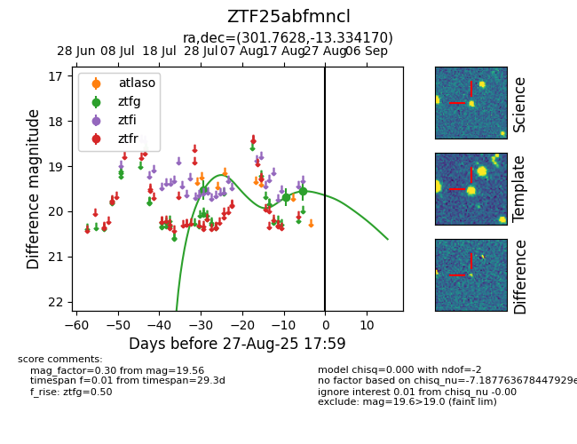

Target ZTF25abfmncl at 2025-08-27 17:59, see:
FINK: fink-portal.org/ZTF25abfmncl
Lasair: lasair-ztf.lsst.ac.uk/objects/ZTF25abfmncl
ALeRCE: alerce.online/object/ZTF25abfmncl
alt names
ZTF25abfmncl (ztf,fink)
coordinates:
equatorial (ra, dec) = (301.7628,-13.33417)
galactic (l, b) = (29.1090,-22.68857)
photometry
last ztfg=19.56
3 ztfg detections
